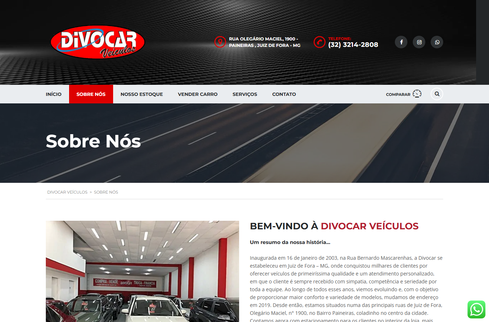
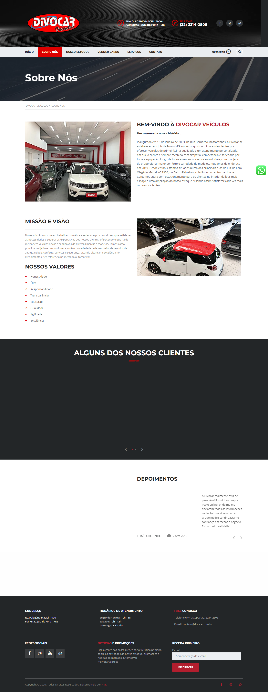

Sistema de Investigação de Marca e Identidade Online
https://www.divocar.com.br/about-us/
Prioridade: MEDIUM · Cenário: B_AMBIGUOUS_COMMUNICATION · Revisão humana: PENDING
Trata-se da página institucional ('Sobre Nós') da loja de automóveis Divocar Veículos (divocar.com.br). Embora a loja utilize identidade visual própria e mencione a marca BV em contexto multibancos, o estabelecimento referencia o logotipo 'logo-bv-financeira-256' na divulgação de financiamento na loja e omite completamente seu CNPJ, sua razão social e a declaração obrigatória de correspondente bancário no site, configurando comunicação ambígua/inadequação de transparência à luz da Resolução CMN nº 4.935/2021. [Revisor: CONFIRM] Confirma-se a classificação REVIEW_REQUIRED (prioridade MEDIUM). Trata-se de uma loja multimarcas de veículos (Divocar Veículos) que inclui a marca/logotipo da BV Financeira ('logo-bv-financeira-256') em seu carrossel de financiamento (E-IMG-6, E-IMG-13, E-DISC-001) sem apresentar no site sua razão social, CNPJ, declaração de condição de correspondente bancário ou dados de ouvidoria (E-FOLD, E-FTR, E-SHOT-FULL), em desacordo com as exigências de transparência da Resolução CMN nº 4.935/2021.


| Ref | Tipo | Local | Conteúdo |
|---|---|---|---|
| E-URL | domain | url | URL final: https://www.divocar.com.br/about-us/ (domínio: www.divocar.com.br) |
| E-DISC-001 | text | search_index | Índice de busca (grounding): divocar.com.br — **URL:** `https://divocar.com.br/sobre-nos/` | **Uso da Marca:** Expõe o arquivo de logotipo `logo-bv-financeira-256` em carrossel/galeria visual junto à seção "Financiamento Facilitado", afirmando disponibilizar financiamento bancário realizado diretamente na loja em poucos minutos | **Conformidade (CNPJ / Correspondente):** Apresenta nome fantasia e histórico comercial em Juiz de Fora/MG, mas omite a razão social, o CNPJ e a identificação formal da condição de correspondente bancário ao ofertar a intermediação de financiamento |
| E-SHOT-VIEWPORT | screenshot | viewport | evidence\C37d23e8700\attempt-1\viewport.png (sha256 96cf7b154055d458…) |
| E-SHOT-FULL | screenshot | page | evidence\C37d23e8700\attempt-1\fullpage.png (sha256 d9ce41aeb5de40ab…) |
| E-TITLE | title | head | Sobre Nós – Divocar Veículos |
| E-CANONICAL | meta | head | https://www.divocar.com.br/about-us/ |
| E-HEAD-1 | heading | page | Sobre Nós |
| E-HEAD-2 | heading | page | BEM-VINDO À DIVOCAR VEÍCULOS |
| E-HEAD-3 | heading | page | MISSÃO E VISÃO |
| E-HEAD-4 | heading | page | NOSSOS VALORES |
| E-HEAD-5 | heading | page | ALGUNS DOS NOSSOS CLIENTES |
| E-HEAD-6 | heading | page | NOSSAS VANTAGENS |
| E-HEAD-7 | heading | page | DEPOIMENTOS |
| E-FOLD | text | viewport (acima da dobra) | Telefone: (32) 3214-2808 Rua Olegário Maciel, 1900 - Paineiras , Juiz de Fora - MG Comparar Início Sobre Nós Nosso Estoque Vender Carro Serviços Contato Sobre Nós Divocar Veículos > Sobre Nós BEM-VINDO À DIVOCAR VEÍCULOS Um resumo da nossa história… Inaugurada em 16 de Janeiro de 2003, na Rua Bernardo Mascarenhas, a Divocar se estabeleceu em Juiz de Fora – MG, onde conquistou milhares de clientes por oferecer veículos de primeiríssima qualidade e um atendimento personalizado, em que o cliente é sempre recebido com simpatia, competência e seriedade por toda a equipe. Ao longo de todos esses anos, viemos evoluindo e, com o objetivo de proporcionar maior conforto e variedade de modelos, mudamos de endereço em 2019. Desde então, estamos situados numa das principais ruas de Juiz de Fora, Olegário Maciel, n° 1900, no Bairro Paineiras, coladinho no centro da cidade. Contamos agora com estacionamento para os clientes no interior da loja, mais espaço e uma ampliação do nosso estoque, visando assim satisfazer cada vez mais os nossos clientes. |
| E-FTR | text | footer | ENDEREÇO Rua Olegário Maciel, 1900 Paineiras, Juiz de Fora – MG HORÁRIOS DE ATENDIMENTO Segunda - Sexta: 10h - 18h Sábado: 10h - 13h Domingo: Fechado FALE CONOSCO Telefone e Whatsapp: (32) 3214-2808 E-mail: contato@divocar.com.br REDES SOCIAIS NOTÍCIAS E PROMOÇÕES Siga a gente nas nossas redes sociais e saiba primeiro sobre as novidades do nosso estoque, promoções e notícias do mercado automotivo! @divocarveiculos RECEBA PRIMEIRO E-mail: Copyright © 2020. Todos Direitos Reservados. Desenvolvido por HMV |
| E-CTA-1 | cta | footer | Inscrever |
| E-CONTACT-1 | contact | page | <https://pt-br.facebook.com/divocarveiculos/> |
| E-CONTACT-2 | contact | page | <https://www.instagram.com/divocarveiculos/> |
| E-CONTACT-3 | contact | page | <https://bit.ly/whatsapp-divocar> |
| E-CONTACT-4 | contact | page | (32) 3214-2808 <tel:(32)3214-2808> |
| E-CONTACT-5 | contact | footer | <https://pt-br.facebook.com/divocarveiculos/> |
| E-CONTACT-6 | contact | footer | <https://www.instagram.com/divocarveiculos/> |
| E-CONTACT-7 | contact | footer | <https://bit.ly/whatsapp-divocar> |
| E-CONTACT-8 | contact | footer | <https://pt-br.facebook.com/divocarveiculos/> |
| E-CONTACT-9 | contact | footer | <https://www.instagram.com/divocarveiculos/> |
| E-CONTACT-10 | contact | footer | <https://bit.ly/whatsapp-divocar> |
| E-IMG-1 | image | page (acima da dobra) | imagem alt='Logo' src=https://i2.wp.com/divocar.com.br/wp-content/uploads/2020/10/logo-transparente.png (300x209, acima da dobra) |
| E-IMG-2 | image | page | imagem alt='logo-banco-pan-256' src=data:image/svg+xml,%3Csvg xmlns='http://www.w3.org/2000/svg' viewBox='0 0 156 150'%3E%3C/svg%3E (163x157, abaixo da dobra) |
| E-IMG-3 | image | page | imagem alt='logo-banco-safra-256' src=data:image/svg+xml,%3Csvg xmlns='http://www.w3.org/2000/svg' viewBox='0 0 256 150'%3E%3C/svg%3E (163x96, abaixo da dobra) |
| E-IMG-4 | image | page | imagem alt='logo-porto-seguro-256' src=data:image/svg+xml,%3Csvg xmlns='http://www.w3.org/2000/svg' viewBox='0 0 156 150'%3E%3C/svg%3E (163x157, abaixo da dobra) |
| E-IMG-5 | image | page | imagem alt='logo-santander-256' src=data:image/svg+xml,%3Csvg xmlns='http://www.w3.org/2000/svg' viewBox='0 0 156 150'%3E%3C/svg%3E (163x157, abaixo da dobra) |
| E-IMG-6 | image | page | imagem alt='logo-bv-financeira-256' src=data:image/svg+xml,%3Csvg xmlns='http://www.w3.org/2000/svg' viewBox='0 0 156 150'%3E%3C/svg%3E (163x157, abaixo da dobra) |
| E-IMG-7 | image | page | imagem alt='logo-itau-256' src=data:image/svg+xml,%3Csvg xmlns='http://www.w3.org/2000/svg' viewBox='0 0 156 150'%3E%3C/svg%3E (163x157, abaixo da dobra) |
| E-IMG-8 | image | page | imagem alt='logo-bradesco-256' src=data:image/svg+xml,%3Csvg xmlns='http://www.w3.org/2000/svg' viewBox='0 0 156 150'%3E%3C/svg%3E (163x157, abaixo da dobra) |
| E-IMG-9 | image | page | imagem alt='logo-banco-pan-256' src=data:image/svg+xml,%3Csvg xmlns='http://www.w3.org/2000/svg' viewBox='0 0 156 150'%3E%3C/svg%3E (163x157, abaixo da dobra) |
| E-IMG-10 | image | page | imagem alt='logo-banco-safra-256' src=data:image/svg+xml,%3Csvg xmlns='http://www.w3.org/2000/svg' viewBox='0 0 256 150'%3E%3C/svg%3E (163x96, abaixo da dobra) |
| E-IMG-11 | image | page | imagem alt='logo-porto-seguro-256' src=data:image/svg+xml,%3Csvg xmlns='http://www.w3.org/2000/svg' viewBox='0 0 156 150'%3E%3C/svg%3E (163x157, abaixo da dobra) |
| E-IMG-12 | image | page | imagem alt='logo-santander-256' src=data:image/svg+xml,%3Csvg xmlns='http://www.w3.org/2000/svg' viewBox='0 0 156 150'%3E%3C/svg%3E (163x157, abaixo da dobra) |
| E-IMG-13 | image | page | imagem alt='logo-bv-financeira-256' src=data:image/svg+xml,%3Csvg xmlns='http://www.w3.org/2000/svg' viewBox='0 0 156 150'%3E%3C/svg%3E (163x157, abaixo da dobra) |
| E-IMG-14 | image | page | imagem alt='logo-itau-256' src=data:image/svg+xml,%3Csvg xmlns='http://www.w3.org/2000/svg' viewBox='0 0 156 150'%3E%3C/svg%3E (163x157, abaixo da dobra) |
| E-IMG-15 | image | page | imagem alt='logo-bradesco-256' src=data:image/svg+xml,%3Csvg xmlns='http://www.w3.org/2000/svg' viewBox='0 0 156 150'%3E%3C/svg%3E (163x157, abaixo da dobra) |
| E-IMG-16 | image | page | imagem alt='logo-banco-pan-256' src=data:image/svg+xml,%3Csvg xmlns='http://www.w3.org/2000/svg' viewBox='0 0 156 150'%3E%3C/svg%3E (163x157, abaixo da dobra) |
| E-IMG-17 | image | page | imagem alt='logo-banco-safra-256' src=data:image/svg+xml,%3Csvg xmlns='http://www.w3.org/2000/svg' viewBox='0 0 256 150'%3E%3C/svg%3E (163x96, abaixo da dobra) |
| E-TXT-001 | text | page | TELEFONE: |
| E-TXT-002 | text | page | Inaugurada em 16 de Janeiro de 2003, na Rua Bernardo Mascarenhas, a Divocar se estabeleceu em Juiz de Fora – MG, onde conquistou milhares de clientes por oferecer veículos de primeiríssima qualidade e um atendimento personalizado, em que o cliente é sempre recebido com simpatia, competência e seriedade por toda a equipe. Ao longo de todos esses anos, viemos evoluindo e, com o objetivo de |
| E-TXT-003 | text | page | proporcionar maior conforto e variedade de modelos, mudamos de endereço em 2019. Desde então, estamos situados numa das principais ruas de Juiz de Fora, Olegário Maciel, n° 1900, no Bairro Paineiras, coladinho no centro da cidade. Contamos agora com estacionamento para os clientes no interior da loja, mais espaço e uma ampliação do nosso estoque, visando assim satisfazer cada vez mais os nossos |
| E-TXT-004 | text | page | a excelência no atendimento e ser referência no mercado automotivo! |
| E-TXT-005 | text | page | ENDEREÇO |
| E-TXT-006 | text | page | HORÁRIOS DE ATENDIMENTO |
| E-TXT-007 | text | page | Telefone e Whatsapp: (32) 3214-2808 |
| Dimensão | Sinal | Achado | Refs |
|---|---|---|---|
| VISUAL_IDENTITY | LEGITIMATE | O site utiliza identidade visual própria da loja Divocar Veículos (cores preto, vermelho e branco), sem imitar o layout do Banco BV. | E-SHOT-VIEWPORT E-SHOT-FULL E-IMG-1 |
| DECLARED_COMMERCIAL_IDENTITY | CONFUSION | Embora identifique o nome fantasia 'Divocar Veículos' e endereço físico em Juiz de Fora/MG, a página não informa o CNPJ nem a razão social do estabelecimento. | E-TITLE E-FOLD E-FTR |
| CORRESPONDENT_TRANSPARENCY | CONFUSION | Não há aviso de atuação como correspondente bancário nem divulgação de ouvidoria da instituição contratante, conforme exigido pela Resolução CMN nº 4.935/2021. | E-FTR E-DISC-001 E-SHOT-FULL |
| INSTITUTIONAL_LANGUAGE | LEGITIMATE | O discurso institucional é próprio da revenda de automóveis, sem alegação de ser canal oficial do banco. | E-HEAD-2 E-TXT-002 E-TXT-003 |
| LOGO_USAGE | CONFUSION | Presença de elementos de imagem referentes ao logotipo 'logo-bv-financeira-256' em carrossel multimarcas de bancos financiadores (junto a Pan, Safra, Porto Seguro, Santander, Itaú e Bradesco). | E-IMG-2 E-IMG-5 E-IMG-6 E-IMG-7 E-IMG-13 E-DISC-001 |
| SERVICE_JOURNEY | NEUTRAL | A página analisada é institucional ('Sobre Nós'), mencionando atuação no comércio e financiamento de veículos e disponibilizando contatos de WhatsApp e telefone. | E-FOLD E-SHOT-VIEWPORT E-DISC-001 |
| CONTACT_CHANNELS | LEGITIMATE | Os canais de contato divulgados (telefone fixo local, WhatsApp, e-mail @divocar.com.br e redes sociais @divocarveiculos) são claramente vinculados à loja. | E-FTR E-CONTACT-2 E-CONTACT-3 E-CONTACT-4 |
| CONSUMER_CONFUSION | NEUTRAL | Baixo risco de o consumidor acreditar tratar-se do site oficial do Banco BV, mas há inadequação regulatória na transparência de correspondente e uso de marca. | E-SHOT-VIEWPORT E-SHOT-FULL |
Trata-se da página institucional ('Sobre Nós') da loja de automóveis Divocar Veículos (divocar.com.br). Embora a loja utilize identidade visual própria e mencione a marca BV em contexto multibancos, o estabelecimento referencia o logotipo 'logo-bv-financeira-256' na divulgação de financiamento na loja e omite completamente seu CNPJ, sua razão social e a declaração obrigatória de correspondente bancário no site, configurando comunicação ambígua/inadequação de transparência à luz da Resolução CMN nº 4.935/2021.
Nenhum CNPJ ou razão social identificáveis no conteúdo coletado.
| Tipo | Valor | Ref | Contexto |
|---|---|---|---|
| domain | divocar.com.br | E-URL | |
| contato@divocar.com.br | E-FTR | ||
| social_profile | https://www.instagram.com/divocarveiculos/ | E-CONTACT-2 | |
| phone | (32) 3214-2808 | E-FOLD | |
| phone | (32)3214-2808 | E-CONTACT-4 | |
| <https://bit.ly/whatsapp-divocar> | E-CONTACT-3 |
Mapeamento indicativo para apoio à auditoria. Não constitui conclusão regulatória; a decisão definitiva pertence à auditoria.
Fonte: NORMATIVE
Art. 14. O contrato de correspondente deve estabelecer: [...] II - vedação à utilização, pelo contratado, de logomarca ou de outros atributos que sejam similares aos adotados pela instituição contratante em suas agências, postos de atendimento, sítio eletrônico na internet, aplicativo ou outras plataformas de comunicação em rede;
Hipótese: Uso de logomarca ou de atributos similares aos adotados pela contratante em seus canais. A norma disciplina correspondentes contratados; o responsável não foi identificado como correspondente.
Evidência observada: E-DISC-001 E-IMG-13 E-IMG-2 E-IMG-5 E-IMG-6 E-IMG-7
Informação faltante:
Fonte: NORMATIVE
Art. 14. O contrato de correspondente deve estabelecer: [...] III - divulgação ao público, pelo contratado, de sua condição de prestador de serviços à instituição contratante, identificada pelo nome com que é conhecida no mercado, com descrição dos produtos e serviços oferecidos e canais de contato da instituição contratante, inclusive de sua ouvidoria, em local visível, em destaque e em formato legível, por meio de: a) sítio eletrônico do correspondente na internet, acessível na página inicial; b) aplicativo e outras plataformas de comunicação em rede do correspondente; [...]
Hipótese: Divulgação ao público da condição de prestador de serviços à contratante ausente, insuficiente ou sem destaque. A norma disciplina correspondentes contratados; o responsável não foi identificado como correspondente.
Evidência observada: E-DISC-001 E-FOLD E-FTR E-SHOT-FULL E-TITLE
Informação faltante:
Fonte: NORMATIVE
Art. 3º O correspondente atua por conta e sob as diretrizes da instituição contratante, que assume inteira responsabilidade pelo atendimento prestado aos clientes e usuários por meio do contratado.
Evidência observada: E-CONTACT-2 E-CONTACT-3 E-CONTACT-4 E-FTR
Se o responsável não for correspondente contratado, os indícios podem caracterizar uso indevido de marca ou fraude, fora do escopo da Res. 4.935: avaliar encaminhamento às áreas jurídica/segurança.
Limitações: requisitos contratuais/internos não fornecidos: mapeamento limitado ao texto normativo
Decisão: CONFIRM → REVIEW_REQUIRED / MEDIUM
Confirma-se a classificação REVIEW_REQUIRED (prioridade MEDIUM). Trata-se de uma loja multimarcas de veículos (Divocar Veículos) que inclui a marca/logotipo da BV Financeira ('logo-bv-financeira-256') em seu carrossel de financiamento (E-IMG-6, E-IMG-13, E-DISC-001) sem apresentar no site sua razão social, CNPJ, declaração de condição de correspondente bancário ou dados de ouvidoria (E-FOLD, E-FTR, E-SHOT-FULL), em desacordo com as exigências de transparência da Resolução CMN nº 4.935/2021.
| Tema | Severidade | Questionamento | Refs |
|---|---|---|---|
| Renderização visual dos logotipos | LOW | Os logotipos do carrossel de bancos (incluindo 'logo-bv-financeira-256') estavam com lazy-load em SVG placeholder no momento da captura de tela, mas sua presença está comprovada no DOM da página e no índice de busca. | E-IMG-6 E-IMG-13 E-DISC-001 E-SHOT-FULL |
| domain_attribution | MEDIUM | Responsável pela página não identificado; a conclusão sobre a marca não pode ser atribuída a um estabelecimento específico. | E-URL |
| Fonte | Consulta / hipótese | URL original | Título / trecho |
|---|---|---|---|
| grounding | Objetivo: Páginas de financiamento que expõem arquivos de logotipo da marca.
Execute no Google Search as seguintes consultas (dorks):
- (inurl:logo-bv OR "logo-bv" OR "logo-bv-financeira") (financiamento OR veículos) -site:bv.com.br -site:bancobv.com.br -site:bvfinanceira.com.br -site:bvinvestimentos.com.br -site:napista.com.br -site:bvopen.com.br -site:meufinanciamentosolar.com.br -site:votorantim.com.br -site:vam.com.br -site:reclameaqui.com.br -site:jusbrasil.com.br -site:jus.br -site:weebly.com -site:site123.me
- ("Logo Banco BV" OR "Logo bv financeira" OR "logo BV") financiamento veículos -site:brandsoftheworld.com -site:logospng.org -site:bv.com.br -site:bancobv.com.br -site:bvfinanceira.com.br -site:bvinvestimentos.com.br -site:napista.com.br -site:bvopen.com.br -site:meufinanciamentosolar.com.br -site:votorantim.com.br -site:vam.com.br -site:reclameaqui.com.br -site:jusbrasil.com.br -site:jus.br -site:weebly.com -site:site123.me
Liste de forma abrangente as páginas públicas encontradas (até 12 resultados distintos), informando para cada uma o nome do estabelecimento/perfil, a URL e como a marca é utilizada (destaque visual, título, feirão, simulador, redes sociais e se há ou não identificação clara de CNPJ e condição de correspondente bancário). H1-identity:logo-assets | https://www.divocar.com.br/about-us/ | divocar.com.br **URL:** `https://divocar.com.br/sobre-nos/` | **Uso da Marca:** Expõe o arquivo de logotipo `logo-bv-financeira-256` em carrossel/galeria visual junto à seção "Financiamento Facilitado", afirmando disponibilizar financiamento bancário realizado diretamente na loja em poucos minutos | **Conformidade (CNPJ / Correspondente):** Apresenta nome fantasia e histórico comercial em Juiz de Fora/MG, mas omite a razão social, o CNPJ e a identificação formal da condição de correspondente bancário ao ofertar a intermediação de financiamento |
Original: https://www.divocar.com.br/about-us/
Final: https://www.divocar.com.br/about-us/
| Artefato | Caminho | SHA-256 | Bytes |
|---|---|---|---|
| screenshot_viewport | evidence\C37d23e8700\attempt-1\viewport.png | 96cf7b154055d45824ad8510c492b4f117404b6cb399687022e0878b38f7e925 | 686393 |
| screenshot_full | evidence\C37d23e8700\attempt-1\fullpage.png | d9ce41aeb5de40ab392fb8205ccfccdf34a712b9f4a38b6229570702400b8796 | 1203980 |
| html | evidence\C37d23e8700\attempt-1\page.html.txt | ee450abb45210ad9320e8718fbfe1ac93bbd384aac4b30daff352ac9da4a419e | 116212 |
| text | evidence\C37d23e8700\attempt-1\text.txt | 89b9d385d02d4bd19e631ddd139118518f41da24cf6b336fdecd80408a5a905b | 4253 |
| page_data | evidence\C37d23e8700\attempt-1\page.json | d9a46faadb55e2d59d3c025510e4eccc9366ed6561c43ec7cc86e9b0d15f3341 | 24456 |
| Quando | De | Para | Nota |
|---|---|---|---|
| 2026-11-23T14:17:58+00:00 | DISCOVERED | QUEUED | prioritised (score 1.0) |
| 2026-11-23T14:45:37+00:00 | QUEUED | COLLECTING | |
| 2026-11-23T14:45:56+00:00 | COLLECTING | COLLECTED | |
| 2026-11-23T14:45:56+00:00 | COLLECTED | ANALYZING | |
| 2026-11-23T14:46:42+00:00 | ANALYZING | REVIEWING | |
| 2026-11-23T14:46:55+00:00 | REVIEWING | COMPLETED |